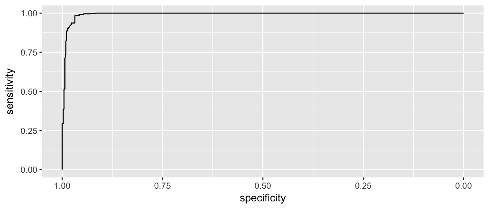
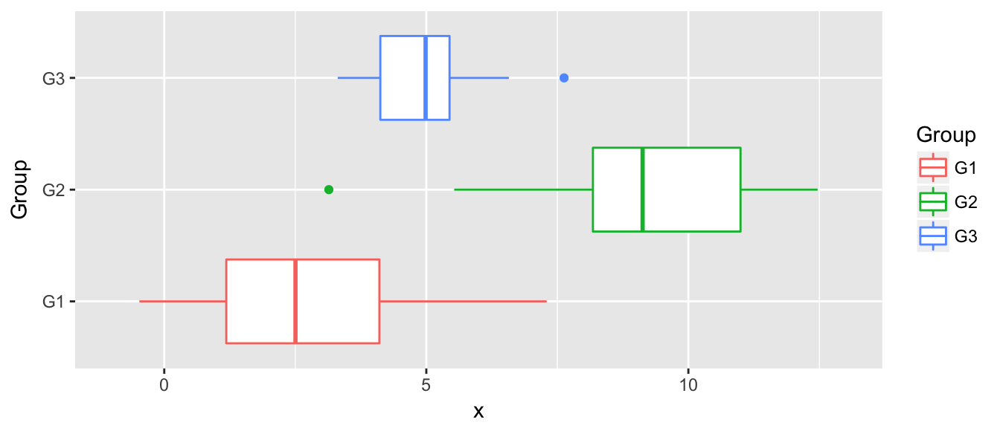
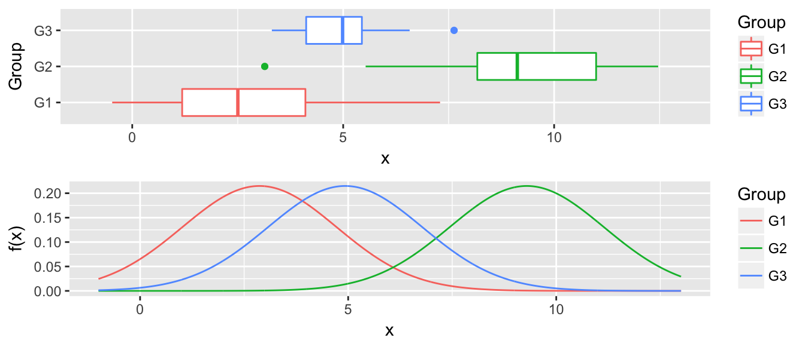
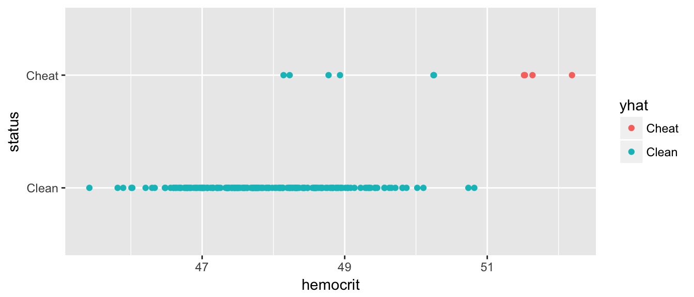

Chapter 4 Classification with LDA, QDA, and KNN
library(caret)
library(MASS) # lda function used by caret
library(dplyr) # data frame manipulations
library(ggplot2) # plotting
library(STA578) # for my multiplot() function
library(pROC) # All the ROC stuffIn this chapter we look at several forms of classification. In particular we will focus on the classical techniques of logistic regression, Linear Discriminent Analysis and Quadratic Discriminent Analysis.
4.1 Logistic Regression
We won’t cover the theory of logistic regression here, but you can find it elsewhere.
The dataset faraway::wbca comes from a study of breast cancer in Wisconsin. There are 681 cases of potentially cancerous tumors of which 238 are actually malignant (ie cancerous). Determining whether a tumor is really malignant is traditionally determined by an invasive surgical procedure. The purpose of this study was to determine whether a new procedure called ‘fine needle aspiration’, which draws only a small sample of tissue, could be effective in determining tumor status.
data('wbca', package='faraway')
# clean up the data
wbca <- wbca %>%
mutate(Class = ifelse(Class==0, 'malignant', 'benign')) %>%
dplyr::select(Class, BNucl, UShap, USize)
# Fit the model
# Malignant is considered a success
model <- glm( I(Class=='malignant') ~ ., data=wbca, family='binomial' )
# Get the response values
# type='response' gives phat values which live in [0,1]
# type='link' gives the Xbeta values whice live in (-infinity, infinity)
wbca <- wbca %>%
mutate(phat = predict(model, type='response'),
yhat = ifelse(phat > .5, 'malignant', 'benign'))
# Calculate the confusion matrix
table( Truth=wbca$Class, Predicted=wbca$yhat )## Predicted
## Truth benign malignant
## benign 432 11
## malignant 15 223As usual we can calculate the summary tables…
summary(model)##
## Call:
## glm(formula = I(Class == "malignant") ~ ., family = "binomial",
## data = wbca)
##
## Deviance Residuals:
## Min 1Q Median 3Q Max
## -3.8890 -0.1409 -0.1409 0.0287 2.2284
##
## Coefficients:
## Estimate Std. Error z value Pr(>|z|)
## (Intercept) -6.35433 0.54076 -11.751 < 2e-16 ***
## BNucl 0.55297 0.08041 6.877 6.13e-12 ***
## UShap 0.62583 0.17506 3.575 0.000350 ***
## USize 0.56793 0.15910 3.570 0.000358 ***
## ---
## Signif. codes: 0 '***' 0.001 '**' 0.01 '*' 0.05 '.' 0.1 ' ' 1
##
## (Dispersion parameter for binomial family taken to be 1)
##
## Null deviance: 881.39 on 680 degrees of freedom
## Residual deviance: 148.43 on 677 degrees of freedom
## AIC: 156.43
##
## Number of Fisher Scoring iterations: 7From this table, we see that for a breast tumor, the larger values of BNucl, UShap, and USize imply a greater probability of it being malignant. So for a tumor with
## BNucl UShap USize
## 1 2 1 2We would calculate \[\begin{aligned} X \hat{\beta} &= \hat{\beta}_0 + 2 \cdot \hat{\beta}_1 + 1 \cdot \hat{\beta}_2 + 2 \cdot \hat{\beta}_3 \\ &= -6.35 + 2*(0.553) + 1*(0.626) + 2*(0.568) \\ &= -3.482 \end{aligned}\]
and therefore \[\hat{p} = \frac{1}{1+e^{-X\hat{\beta}}} = \frac{1}{1+e^{3.482}} = 0.0297\]
newdata = data.frame( BNucl=2, UShap=1, USize=2 )
predict(model, newdata=newdata)## 1
## -3.486719predict(model, newdata=newdata, type='response')## 1
## 0.0296925So for a tumor with these covariates, we would classify it as most likely to be benign.
4.2 ROC Curves
In the medical scenario where we have to decide if a tumor is malignant of benign, we shouldn’t treat the misclassification errors as being the same. If we incorrectly identify a tumor as malignant when it is not, that will cause a patient to undergo a somewhat invasive surgury to remove the tumor. However if we incorrectly identify a tumor as being benign, then the cancerous tumor will likely grow and eventually kill the patient. While the first error is regretable, the second is far worse.
Given that reasoning, perhaps we shouldn’t use the rule: If \(\hat{p} >= 0.5\) classify as malignant. Instead perhaps we should use \(\hat{p} >= 0.3\) or \(\hat{p} >= 0.05\).
Whatever decision rule we make, we should consider how many of each type of error we make. Consider the following confusion maatrix:
| Predict Positive | Predict Negative | Total | |
|---|---|---|---|
| Positive | True Pos (TP) | False Neg (FN) | \(P\) |
| Negative | False Pos (FP) | True Neg (TN) | \(N\) |
| Total | \(P^*\) | \(N^*\) |
where \(P\) is the number of positive cases, \(N\) is the number of negative cases, \(P^*\) is the number of observations predicted to be positive, and \(N^*\) is the number predicted to be negative.
| Quantity | Formula | Synonyms |
|---|---|---|
False Positive Rate |
\(FP/N\) |
Type I Error; 1-Specificity |
True Positive Rate |
\(TP/P\) |
Power; Sensitivity; Recall |
Pos. Pred. Value |
\(TP/P^*\) |
Precision |
We can think of the True Positive Rate as the probability that a Positive case will be correctly classified as a positive. Similarly a False Positive Rate is the probability that a Negative case will be incorrectly classified as a positive.
I wish to examine the relationship between the False Positive Rate and the True Positive Rate for any decision rule. So what we could do is select a sequence of decision rules and for each calculate the (FPR, TPR) pair, and then make a plot where we play connect the dots with the (FPR, TPR) pairs.
Of course we don’t want to have to do this by hand, so we’ll use the package pROC to do it for us.
# Calculate the ROC information using pROC::roc()
myROC <- roc( wbca$Class, wbca$phat )
# make a nice plot using ggplot2 and pROC::ggroc()
ggroc( myROC ) 
This looks pretty good and in an ideal classifier that makes prefect predictions, this would be a perfect right angle at the bend.
Lets zoom in a little on the high specificity values (i.e. low false positive rates)
ggroc( myROC ) + xlim(1, .9)We see that if we want to correctly identify about 99% of maligant tumors, we will have a false positive rate of about 1-0.95 = 0.05. So about 5% of benign tumors would be incorrectly classified as malignant.
It is a little challenging to read the graph to see what the Sensitivity is for a particular value of Specificity. To do this we’ll use another function because the authors would prefer you to also estimate the confidence intervals for the quantity. This is a case where bootstrap confidence intervals are quite effective.
ci(myROC, of='sp', sensitivities=.99)## 95% CI (2000 stratified bootstrap replicates):
## se sp.low sp.median sp.high
## 0.99 0.9232 0.9571 0.9797ci(myROC, of='se', specificities=.975)## 95% CI (2000 stratified bootstrap replicates):
## sp se.low se.median se.high
## 0.975 0.8866 0.937 0.9958One measure of how far we are from the perfect predictor is the area under the curve. The perfect model would have an area under the curve of 1. For this model the area under the curve is:
auc(myROC) ## Area under the curve: 0.9929ci(myROC, of='auc')## 95% CI: 0.9878-0.9981 (DeLong)ci(myROC, of='auc', method='bootstrap')## 95% CI: 0.987-0.9975 (2000 stratified bootstrap replicates)which seems pretty good and Area Under the Curve (AUC) is often used as a way of comparing the quality of binary classifiers.
4.3 Linear Discriminent Analysis
Discriminent analysis classification techniques assume that we have a categorical (possibly unordered) response \(y\) and a continuous covariate predictor \(x\). In many ways we can consider this the inverse problem of a 1-way anova.

Because we are doing ANOVA in reverse, we assume the same relationship between the groups and the continuous covariate, namely that \[x_{ij} \stackrel{iid}{\sim} N\left( \mu_i, \sigma^2 \right)\]
So to fit normal distributions, we just need to estimate values for the mean of each group \(\hat{\mu}_i\) and something for the overal variance, \(\hat{\sigma}^2\).
We will use the individual sample means for \(\hat{\mu}_i\) and the pooled variance estimator for \(\hat{\sigma}^2\). Let \(k\) be the number of groups, \(n_i\) be the number of samples in group \(i\), and \(n=n_1 + \dots + n_k\) be the total number of observations.
\[\hat{\mu}_i = \bar{x}_i = \frac{1}{n_i} \sum_{j=1}^{n_i} x_{ij}\]
\[\begin{aligned} \hat{\sigma}^2 &= \frac{1}{n-k} \sum_{i=1}^k \sum_{j=1}^{n_i} (x_{ij} - \hat{\mu}_i)^2\\ &= \frac{1}{n-k} \sum_{i=1}^k (n_i-1) s^2_i \end{aligned}\]
str(data)## 'data.frame': 90 obs. of 2 variables:
## $ x : num 6.04 10.33 4.97 2.44 9.19 ...
## $ Group: Factor w/ 3 levels "G1","G2","G3": 1 2 3 1 2 3 1 2 3 1 ...n <- nrow(data)
k <- length( levels( data$Group ))
# calculate group level statistics and pooled variance
params <- data %>%
group_by(Group) %>%
summarise( xbar = mean(x),
s2_i = var(x),
n_i = n() ) %>%
mutate( s2 = sum( (n_i -1)*s2_i ) / (n-k) )# Calculate the k curves
newdata <- expand.grid( x=seq(-1,13, by=0.01), Group=paste('G', 1:3, sep='') ) %>%
left_join(params, by='Group') %>%
mutate( f = dnorm(x, mean=xbar, sd=sqrt(s2) ) )
P2 <- ggplot(newdata, aes(x=x, y=f, color=Group)) +
geom_line() + xlim(-1, 13) +
labs( y='f(x)' )
multiplot(P1, P2, ncol=1)
Now for any value along the x-axis, say \(x^*\), we predict \(y^*\) as whichever group with the largest \(\hat{f}_i(x^*)\).
4.4 Quadratic Discriminent Analysis
The only difference between linear discriminent analysis and quadratic, is that we know allow for the groups to have different variance terms. \[x_{ij} \stackrel{iid}{\sim} N\left( \mu_i, \sigma^2_i \right)\]
n <- nrow(data)
k <- length( levels( data$Group ))
# calculate group level statistics and pooled variance
params <- data %>%
group_by(Group) %>%
summarise( xbar = mean(x),
s2_i = var(x),
n_i = n() )# Calculate the k curves
newdata <- expand.grid( x=seq(-1,13, by=0.01), Group=paste('G', 1:3, sep='') ) %>%
left_join(params, by='Group') %>%
mutate( f = dnorm(x, mean=xbar, sd=sqrt(s2_i) ) )
P2 <- ggplot(newdata, aes(x=x, y=f, color=Group)) +
geom_line() + xlim(-1, 13) +
labs( y='f(x)' )
multiplot(P1, P2, ncol=1)The decision to classify a point \(x^*, y^*\) as in a particular group is often too stark of a decision, and we would like to assess the certainty of the assignment. We define the posterior probability of the point as coming from group \(i\) as \[P( y^* = i | x^* ) = \frac{ \hat{f}_i(x^*) }{ \sum_j \hat{f}_j(x^*) }\]
That is, add up the heights of all the curves at \(x^*\) and then use the percent contribution of each to the total as the probability.
4.5 Examples
4.5.1 Iris Data
Recall the iris data set is 150 observations that measure leaf and sepal characteristics for three different species of iris. We’ll use the leaf characteristics to try to produce a classification rule.
We will first split this into a training data set and a test data set.
set.seed( 8675309 ) # so that the same training set is chosen every time...
iris$Obs_ID <- 1:150 # there are a couple of identical rows, we don't like that
# random select 1/2 from each species to be the training set
train <- iris %>% group_by(Species) %>% sample_n( 25 )
test <- setdiff(iris, train)ggplot(train, aes(x=Sepal.Length, color=Species)) +
geom_density()While these certainly aren’t normal and it isn’t clear that the equal variance amongst groups is accurate, there is nothing that prevents us from assuming so and just doing LDA.
train %>% group_by(Species) %>%
summarize(xbar = mean(Sepal.Length),
sd = sd(Sepal.Length))## # A tibble: 3 x 3
## Species xbar sd
## <fctr> <dbl> <dbl>
## 1 setosa 4.988 0.3756328
## 2 versicolor 5.812 0.5027591
## 3 virginica 6.412 0.5946427We’ll predict setosa if x < (4.988 + 5.812)/2 = 5.4. We’ll predict versicolor if 5.4 < x < (5.812 + 6.412)/2 = 6.1 We’ll predict versicolor if 6.1 < x
# have R do this
model <- train(Species ~ Sepal.Length, method='lda', data=train)
test$yhat <- predict(model, newdata=test)
table( Truth=test$Species, Prediction=test$yhat )## Prediction
## Truth setosa versicolor virginica
## setosa 22 3 0
## versicolor 1 15 9
## virginica 0 4 21ggplot(test, aes(x=Sepal.Length, y=Species, color=yhat) ) + geom_point()This is a little hard to read, but of the 25 observations that we know are setosa, 3 of them have been misclassified as versicolor. Likewise, of the 25 observations that are virginica, 21 are correctly identified as virginica while 4 are misclassified as versicolor. So out of 75 test cases, we correctly classified 57, and incorrectly classified 17.
# Calculate the Misclassification rate
17/75## [1] 0.2266667test %>%
summarise( misclassification_rate = mean( Species != yhat ) )## misclassification_rate
## 1 0.2266667Next, we will relax the assumption that the distributions have equal variance.
# have R do this
model <- train(Species ~ Sepal.Length, method='qda', data=train)
test$yhat <- predict(model, newdata=test)
table( Truth=test$Species, Prediction=test$yhat )## Prediction
## Truth setosa versicolor virginica
## setosa 24 1 0
## versicolor 1 15 9
## virginica 0 4 21test %>%
summarise( misclassification_rate = mean( Species != yhat ) )## misclassification_rate
## 1 0.2This has improved our accuracy as 2 setosa observations that were previously misclassified are now correctly classified.
# What about KNN?
model <- train(Species ~ Sepal.Length, method='knn', tuneGrid=data.frame(k=3), data=train)
test$yhat <- predict(model, newdata=test)
table( Truth=test$Species, Prediction=test$yhat )## Prediction
## Truth setosa versicolor virginica
## setosa 19 6 0
## versicolor 2 13 10
## virginica 0 5 20test %>%
summarise( misclassification_rate = mean( Species != yhat ) )## misclassification_rate
## 1 0.30666674.5.2 Detecting Blood Doping
library(devtools)
install_github('dereksonderegger/dsData')## Skipping install of 'dsData' from a github remote, the SHA1 (208be54a) has not changed since last install.
## Use `force = TRUE` to force installationlibrary(dsData)We now consider a case where the number of observations is not the same between groups. Here we consider the case where we are interested in using hemocrit levels to detect if a cyclist is cheating.
data('Hemocrit', package='dsData')
ggplot(Hemocrit, aes(x=hemocrit, y=status)) +
geom_point()
What if I just naively assume that all professional cyclists are clean? How accurate is this prediction scheme?
mean( Hemocrit$status == 'Clean' )## [1] 0.95In this case, I am pretty accurate because we correctly classify 95% of the cases! Clearly we should be more intelligent. Lets use the LDA to fit a model that uses hemocrit.
model <- train( status ~ hemocrit, method='lda', data=Hemocrit)
Hemocrit$yhat <- predict(model)
table( Truth=Hemocrit$status, Predicted=Hemocrit$yhat)## Predicted
## Truth Clean Cheat
## Clean 188 2
## Cheat 6 4So this method basically looks to see if the hemocrit level is greater than
Hemocrit %>% group_by(status) %>%
summarise(xbar=mean(hemocrit))## # A tibble: 2 x 2
## status xbar
## <fctr> <dbl>
## 1 Clean 47.91675
## 2 Cheat 50.14432(47.917 + 50.144)/2## [1] 49.0305and calls them a cheater. Can we choose something a bit more clever? The predict function has an option where it returns the class probabilities. By default, it chooses the category with the highest probability (for two classes than means whichever is greater than 0.50). We can create a different rule that labels somebody a cheater only if the posterior probability is greater than 0.8 or whatever.
pred <- predict(model, type='prob')
Hemocrit <- Hemocrit %>%
mutate( phat = pred$Cheat,
yhat = ifelse(phat <= .8, 'Clean', 'Cheat' ))
table( Truth=Hemocrit$status, Predicted=Hemocrit$yhat)## Predicted
## Truth Cheat Clean
## Clean 0 190
## Cheat 4 6mean( Hemocrit$status == Hemocrit$yhat )## [1] 0.97ggplot(Hemocrit, aes(x=hemocrit, y=status, color=yhat)) +
geom_point() Great, now we have no false-positives, but a number of folks are getting away with cheating. But what if we back that up, how many false positives do we get… What we want is a graph that compares my false-positive numbers to the true-positives.
P3 <- pROC::roc(Hemocrit$status, Hemocrit$phat)
pROC::ggroc(P3) 4.6 Exercises
- ISL Chapter 4, problem 4: When the number of features p is large, there tends to be a deterioration in the performance of KNN and other local approaches that perform prediction using only observations that are near the test observation for which a prediction must be made. This phenomenon is known as the curse of dimensionality, and it ties into the fact that non-parametric approaches often perform poorly when p is large. We will now investigate this curse.
Suppose that we have a set of observations, each with measurements on \(p=1\) feature, \(X\). We assume that \(X\) is uniformly (evenly) distributed on \([0,1]\). Associated with each observation is a response value. Suppose that we wish to predict a test observation’s response using only observations that are within 10% of the range of \(X\) closest to that test observation. For instance, in order to predict the response for a test observation with \(X=0.6\), we will use observations in the range \([0.55, 0.65]\). On average, what fraction of the available observations will we use to make the prediction?
- Now suppose that we have a set of observations, each with measurements on \(p=2\) features, \(X_{1}\) and \(X_{2}\). We assume that \(\left(X_{1},X_{2}\right)\) are uniformly distributed on \([0, 1] × [0, 1]\). We wish to predict a test observation’s response using only observations that are within 10% of the range of \(X_{1}\) and within 10% of the range of \(X_{2}\) closest to that test observation. For instance, in order to predict the response for a test observation with \(X_{1} = 0.6\) and \(X_{2} = 0.35\), we will use observations in the range \([0.55, 0.65]\) for \(X_{1}\) and in the range \([0.3, 0.4]\) for \(X_{2}\). On average, what fraction of the available observations will we use to make the prediction?
- Now suppose that we have a set of observations on \(p=100\) features. Again the observations are uniformly distributed on each feature, and again each feature ranges in value from 0 to 1. We wish to predict a test observation’s response using observations within the 10% of each feature’s range that is closest to that test observation. What fraction of the available observations will we use to make the prediction?
- Using your answers to parts (a)–(c), argue that a drawback of KNN when p is large is that there are very few training observations “near” any given test observation. Even for 3 dimensions, the scheme proposed for KNN can only use approximately 1/1000th of the data, and adding more dimensions just makes this worse. In very high dimensions, the idea of “near” doesn’t really work because in order to be “near” two points must be near in all dimensions and if they are different in any one dimension, then they get classified as being far apart, even if they are identical in the other 99 dimensions.
Now suppose that we wish to make a prediction for a test observation by creating a p-dimensional hypercube centered around the test observation that contains, on average, 10% of the training observations. For p = 1, 2, and 100, what is the length of each side of the hypercube? Comment on your answer. Hint: Use the equation from part (c).
- ISL Chapter 4, problem 5: We now examine the differences between LDA and QDA.
- If the Bayes decision boundary is linear, do we expect LDA or QDA to perform better on the training set? On the test set?
- If the Bayes decision boundary is non-linear, do we expect LDA or QDA to perform better on the training set? On the test set?
- In general, as the sample size n increases, do we expect the test prediction accuracy of QDA relative to LDA to improve, decline, or be unchanged? Why?
- True or False: Even if the Bayes decision boundary for a given problem is linear, we will probably achieve a superior test error rate using QDA rather than LDA because QDA is flexible enough to model a linear decision boundary. Justify your answer.
- ISL Chapter 4, problem 6: Suppose we collect data for a group of students in a statistics class with variables \(X_{1}\) = hours studied, \(X_{2}\) = undergrad GPA, and \(Y\) = receive an A. We fit a logistic regression and produce estimated coefficient, \(\hat{\beta}_0=-6\), \(\hat{\beta}_1=0.05\), \(\hat{\beta}_2=1\).
- Estimate the probability that a student who studies for 40 hours and has an undergrad GPA of 3.5 gets an A in the class.
- How many hours would the student in part (a) need to study to have a 50% chance of getting an A in the class?
ISL Chapter 4, problem 8: Suppose that we take a data set, divide it into equally-sized training and test sets, and then try out two different classification procedures. First we use logistic regression and get an error rate of 20% on the training data and 30% on the test data. Next we use 1-nearest neighbors (i.e. K = 1) and get an average error rate (averaged over both test and training data sets) of 18%. Based on these results, which method should we prefer to use for classification of new observations? Why?
- ISL Chapter 4, problem 11: In this problem, you will develop a model to predict whether a given car gets high or low gas mileage based on the
Autodata set that is included in the packageISLR.- Create a binary variable,
mpg01, that contains a 1 if mpg contains a value above its median, and a 0 if mpg contains a value below its median. You can compute the median using themedian()function. Add this column to theAutodata set. Hint: You also need to make sure this is a factor or else your modeling functions will complain. Use thefactor()command to do so. - Explore the data graphically in order to investigate the association between mpg01 and the other features. Which of the other features seem most likely to be useful in predicting mpg01? Scatterplots and boxplots may be useful tools to answer this question. Describe your findings.
- Split the data into equally sized training and test sets.
- Perform LDA on the training data in order to predict mpg01 using the variables that seemed most associated with
mpg01in (b). What is the test error of the model obtained? - Perform QDA on the training data in order to predict mpg01 using the variables that seemed most associated with mpg01 in (b). What is the test error of the model obtained?
- Perform logistic regression on the training data in order to predict
mpg01using the variables that seemed most associated withmpg01in (b). What is the test error of the model obtained? - Perform KNN on the training data, with several values of K, in order to predict
mpg01. Use only the variables that seemed most associated withmpg01in (b). What test errors do you obtain? Which value of K seems to perform the best on this data set?
- Create a binary variable,
ISL Chapter 4, problem 13: Using the
ISLR::Bostondata set, fit classification models in order to predict whether a given suburb has a crime rate above or below the median. Explore logistic regression, LDA, and KNN models using various subsets of the predictors. Describe your findings.